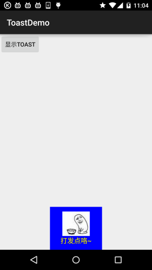
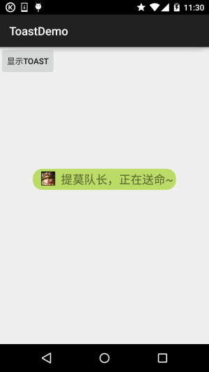

本節の導入：
さて、ようやくAdapterクラス関連のいくつかのコントロールを学び終えました。もちろん、解説した以外にも関連するコントロールはたくさんありますが、一つずつ解説はしません～必要があればご自身でドキュメントを調べて、関連する使い方を確認してください。今回紹介するのは、Androidで情報を通知するためのコントロール——Toast(トースト)です！Toastはとても便利なメッセージ通知ボックスで、画面上にメッセージボックスを表示し、ボタンはなく、フォーカスも取得せず、しばらくすると自動的に消えます！非常に頻繁に使われます！本節ではToastの使い方を学びましょう！
1. ToastクラスのmakeText()メソッドを直接呼び出して作成する
これが最もよく使う形式です！例えば、ボタンをクリックしてToastを表示する場合の使い方：Toast.makeText(MainActivity.this, "表示する内容", Toast.LENGTH_LONG).show();1つ目はコンテキストオブジェクトです！2つ目は表示する内容です！3つ目は表示時間で、LONGとSHORTの2つだけが有効です。たとえ他の値を定義しても、最終的に呼び出されるのはこの2つです！
また、Toastは非常に頻繁に使われるため、これらの共通部分を抽出してメソッドにまとめることができます！Toastを表示したいときは、このメソッドを直接呼び出すだけでToastを表示できるので、非常に便利です！例は以下のとおりです：
>
void midToast(String str, int showTime)
{
Toast toast = Toast.makeText(global_context, str, showTime);
toast.setGravity(Gravity.CENTER_VERTICAL|Gravity.CENTER_HORIZONTAL , 0, 0); //设置显示位置
TextView v = (TextView) toast.getView().findViewById(android.R.id.message);
v.setTextColor(Color.YELLOW); //设置字体颜色
toast.show();
}
上記の抽出したメソッドでは、setGravityを呼び出してToastの表示位置を設定したり、findViewById(android.R.id.message)を使って表示テキストを取得し、色やサイズなどを設定したりできることが分かります！これがコンストラクタによるToastのカスタマイズの2つ目の方法です！
2. コンストラクタを使用してToastをカスタマイズする：
上記でテキストと表示位置をカスタマイズしました。次に、簡単な例を2つ書きます：
1. 画像付きのToastを定義する
効果画像：

主要コード：
private void midToast(String str, int showTime)
{
Toast toast = Toast.makeText(mContext, str, showTime);
toast.setGravity(Gravity.CENTER_HORIZONTAL|Gravity.BOTTOM , 0, 0); //设置显示位置
LinearLayout layout = (LinearLayout) toast.getView();
layout.setBackgroundColor(Color.BLUE);
ImageView image = new ImageView(this);
image.setImageResource(R.mipmap.ic_icon_qitao);
layout.addView(image, 0);
TextView v = (TextView) toast.getView().findViewById(android.R.id.message);
v.setTextColor(Color.YELLOW); //设置字体颜色
toast.show();
}
2. Toastの完全なカスタマイズ
上記の方法でも満足できないなら、自分でToastのレイアウトを書いて表示することも完全に可能です。ただし、表示時間は依然として制御できません！
実行結果画像：

主要コード：
private void midToast(String str, int showTime)
{
LayoutInflater inflater = getLayoutInflater();
View view = inflater.inflate(R.layout.view_toast_custom,
(ViewGroup) findViewById(R.id.lly_toast));
ImageView img_logo = (ImageView) view.findViewById(R.id.img_logo);
TextView tv_msg = (TextView) view.findViewById(R.id.tv_msg);
tv_msg.setText(str);
Toast toast = new Toast(mContext);
toast.setGravity(Gravity.CENTER, 0, 0);
toast.setDuration(Toast.LENGTH_LONG);
toast.setView(view);
toast.show();
}
さらに、Toastのレイアウトと角丸背景のカスタマイズもあります：
角丸の背景：bg_toast.xml：
<?xml version="1.0" encoding="utf-8"?>
<shape xmlns:android="http://schemas.android.com/apk/res/android">
<!-- 设置透明背景色 -->
<solid android:color="#BADB66" />
<!-- 设置一个黑色边框 -->
<stroke
android:width="1px"
android:color="#FFFFFF" />
<!-- 设置四个圆角的半径 -->
<corners
android:bottomLeftRadius="50px"
android:bottomRightRadius="50px"
android:topLeftRadius="50px"
android:topRightRadius="50px" />
<!-- 设置一下边距,让空间大一点 -->
<padding
android:bottom="5dp"
android:left="5dp"
android:right="5dp"
android:top="5dp" />
</shape>
レイアウトファイル：view_toast_custom.xml：
<?xml version="1.0" encoding="utf-8"?>
<LinearLayout xmlns:android="http://schemas.android.com/apk/res/android"
android:id="@+id/lly_toast"
android:layout_width="match_parent"
android:layout_height="match_parent"
android:background="@drawable/bg_toast"
android:orientation="horizontal">
<ImageView
android:id="@+id/img_logo"
android:layout_width="24dp"
android:layout_height="24dp"
android:layout_marginLeft="10dp"
android:src="@mipmap/iv_lol_icon1.html" />
<TextView
android:id="@+id/tv_msg"
android:layout_width="match_parent"
android:layout_height="wrap_content"
android:layout_marginLeft="10dp"
android:textSize="20sp" />
</LinearLayout>
とても簡単です、えへへ～
3. サンプルコードのダウンロード
本節のまとめ：
さて、本節ではToastの基本的な使い方と、Toastをカスタマイズする方法を説明しました。非常に簡単なので、実際の開発で自分のToastをカスタマイズしてみてください～